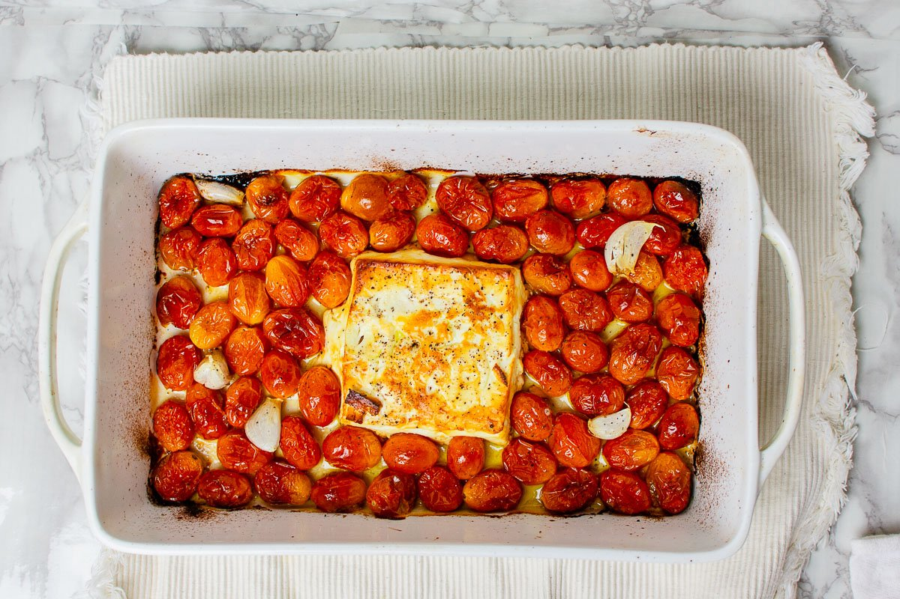

Uunifeta Pasta

Description
Uunifeta Pasta is a very simple dish that packs a flavorful
punch. The dish takes about an hour to come together but only
half of that time is hands-on.
Ingredients
- 1-2 Pints Cherry Tomatoes
- 8 ounce Block Imported Greek Feta Cheese
- 1/4 cup Olive Oil
- 1 bunch Fresh Basil, chopped
- 4 cloves Garlic, peeled
- Salt and Pepper to taste
- 1/2-full box Pasta
Steps
- Preheat oven to 400 degrees F.
-
In a baking dish combine the olive oil, cherry tomatoes,
garlic and pepper, adding the block of feta to the middle.
Top the feta with a drizzle of olive oil.
- Bake at 400 degrees F for 30 minutes.
-
Allowing the dish to keep baking, Start cooking your pasta
according to package instructions, making sure to reserve at
least 2 cups of pasta cooking water.
-
when the dish looks like its just shy of burning,
remove it from the oven and mix in your pasta and basil,
adding reserved pasta water until it reaches
the consistency you want.